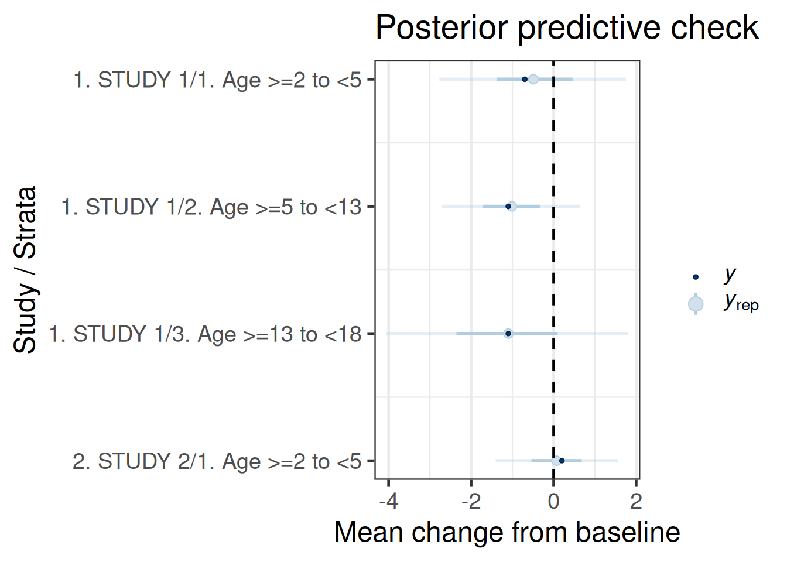
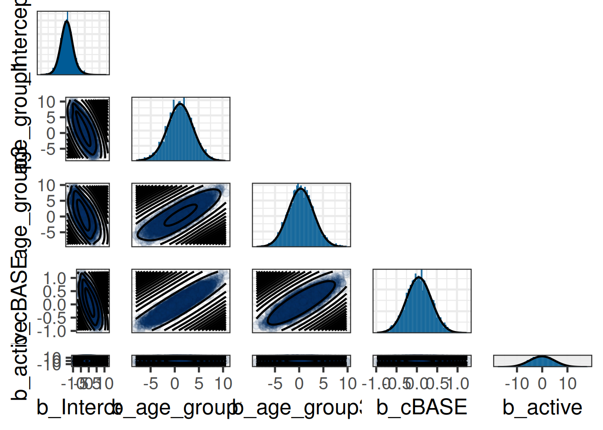
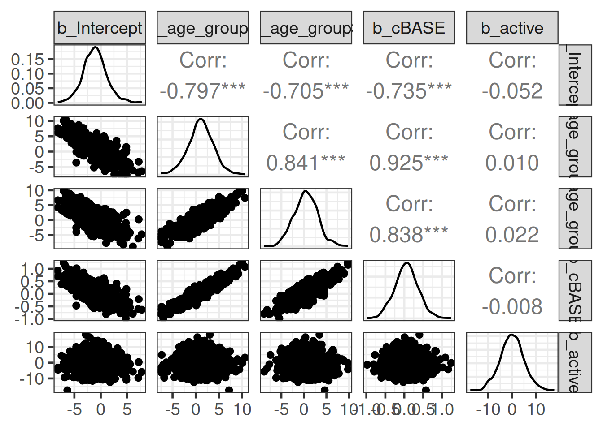

library(ggplot2)
library(dplyr)
library(knitr)
library(brms)
library(posterior)
library(bayesplot)
library(RBesT)
library(GGally)
library(here)
# instruct brms to use cmdstanr as backend and cache all Stan binaries
options(brms.backend="cmdstanr", cmdstanr_write_stan_file_dir=here("_brms-cache"))
# create cache directory if not yet available
dir.create(here("_brms-cache"), FALSE)
set.seed(57339)
# allow for wider and prettier printing
options(width=120, digits=2)6 Use of historical control data with stratification
Here we will demonstrate the use of historical control data as an example for a meta-analytic predictive (MAP) prior approach for the case of data being divided intro strata which are modelled using covariates.
This case study demonstrates
- setting up a random effect meta-analysis with covariates for data strata
- how to summarize with a multi-variate normal mixture the MAP prior with covariates
- how to use the multi-variate normal mixture MAP prior as a prior for the main analysis using
brms
To run the R code of this section please ensure to load these libraries and options first:
6.1 Background
Assume we wish to evaluate in a Phase III study, the effectiveness of an investigational treatment by comparing it to a placebo in a population with a rare disease. The study focused on evaluating the treatment’s efficacy in different age groups from the age range 2 to under 18 years old. The primary endpoint of the study is the change in a Patient Reported Outcome (PRO) total score at the end of the follow-up period (12 months).
The statistical hypothesis being tested for the primary endpoint is that there is no difference in the change from baseline in the PRO total score between the treatment group and the placebo group.
A Bayesian linear regression model will be applied, adjusting for the age classified into 3 groups (2 to under 5, 5 to under 13, and 13 to under 18) and baseline score. The age group of 5 to under 13 years old will serve as the reference category, allowing the use of priors on the intercept and coefficients for treatment to represent the mean change in the score at 12 months in this subgroup of patients.
In order to inform the model, informative priors will be included for the mean change in the PRO score at 12 months in each age subgroup. These priors will be derived from historical studies.
6.2 Data
At the design stage of the trial, data from two historical studies were available for the control group.
- Study 1: A natural history study of patients with the disease.
- Study 2: Control arm of a randomized study evaluating an alternative therapy.
These historical studies provide valuable information for the primary evaluation of the treatment effect in the trial of interest. Casting the historical data into an informative prior on the control response is expected to increase the precision in the estimation of the treatment effect for the Phase III study of interest.
The data set obtained from these two studies are summary statistics for the PRO score at baseline (BASE), the mean change from baseline (CHGm), and is standard error (CHGse) stratified by age group (AGEGRP).
hdata <- tibble::tribble(
~Study , ~AGEGRPN, ~AGEGRP, ~n, ~BASE, ~CHGm, ~CHGse,
"1. STUDY 1" , "1" , "Age >=2 to <5" , 28, 16.8, -0.7, 1.00,
"1. STUDY 1" , "2" , "Age >=5 to <13" , 50, 26.7, -1.1, 0.73,
"1. STUDY 1" , "3" , "Age >=13 to <18" , 23, 18.5, -1.1, 1.27,
"2. STUDY 2" , "1" , "Age >=2 to <5" , 42, 19.9, 0.2, 0.66)
base_mean <- with(hdata, round(weighted.mean(BASE, n), 2))
hdata <- hdata |>
mutate(
# make the age group a factor and set the middle age group to be the reference
age_group = factor(AGEGRPN, c("2", "1", "3")),
# add a centered baseline covariate
cBASE = BASE - base_mean,
# back-calculate the sd
CHGsd = CHGse * sqrt(n),
# make Study a factor for better handling
Study = factor(Study),
# make a variable 'label' for later use in plots
label = paste0(Study, "/", age_group),
label2 = paste0(Study, "/", age_group, ". ", AGEGRP),
# include active treatment indicator (in this case, is set to 0 as all patients are 'control')
active = 0L)
hdata |>
select(Study, AGEGRP, n, BASE, cBASE, CHGm, CHGse, CHGsd) |>
kable()| Study | AGEGRP | n | BASE | cBASE | CHGm | CHGse | CHGsd |
|---|---|---|---|---|---|---|---|
| 1. STUDY 1 | Age >=2 to <5 | 28 | 17 | -4.7 | -0.7 | 1.00 | 5.3 |
| 1. STUDY 1 | Age >=5 to <13 | 50 | 27 | 5.2 | -1.1 | 0.73 | 5.2 |
| 1. STUDY 1 | Age >=13 to <18 | 23 | 18 | -3.0 | -1.1 | 1.27 | 6.1 |
| 2. STUDY 2 | Age >=2 to <5 | 42 | 20 | -1.6 | 0.2 | 0.66 | 4.3 |
6.3 Model description
The primary endpoint will be analyzed using a Bayesian regression model with the mean change from baseline in the PRO score as the response \(Y\) and with treatment \(Z\) (\(Z = 1\) is treatment, \(Z = 0\) is control). The basic analysis model for the Phase III model can be written as
\[Y|\mu,\sigma \sim \mbox{Normal}(\mu, \sigma^2)\]
\[\mu = \beta_0 + \beta_1 \, x_1 + \beta_2 \, x_2 + \beta_3 \, cBASE + \theta \, Z\]
where:
- \(\beta_0\) is the mean change from baseline in the score on the control arm for the 5 to 13 years old age group,
- \(x_1,x_2\) are indicators for the Age >=2 to <-5 and Age >=13 to <18 groups,
- \(\beta_3\) is the covariate for the centered baseline score,
- \(\theta\) is the treatment effect comparing mean change from baseline for the treatment arm vs control arm,
- \(\sigma\) is the sample standard deviation.
Inference for the primary analysis focuses on the posterior distributions of the treatment effect comparing mean change from baseline in the PRO score on the treatment arm vs control arm, \(\theta\).
To form priors, the mean change from baseline as well the standard errors from each historical study and age subgroup are combined using the meta-analytic predictive approach (MAP, Neuenschwander et al 2010). While the MAP approach is mostly used for an intercept only model, the use of covariates complicates the analysis here. However, this complication can be resolved by considering the equivalent meta-analytic (MAC) combined approach. Recall, that whereas the MAP approach is a 2-step procedure (derived MAP prior from historical data, then apply to current data), the MAC approach performs a joint analysis of the historical data and the current data. Both approaches result in exactly the same results (Schmidli et al 2014). Thus, it is useful to first consider the respective MAC model. For this we expand the basic model shown above to also include a random intercept effect, which accounts for between-study heterogeneity. Denoting with \(i\) the study, we thus model the data as
\[Y_i|\mu_i,\sigma \sim \mbox{Normal}(\mu_i, \sigma^2)\]
\[\mu_i = b_i + \beta_1 \, x_1 + \beta_2 \, x_2 + \beta_3 \, cBASE + \theta \, Z\]
\[b_i|\beta_0,\tau \sim \mbox{Normal}(\beta_0, \tau^2).\]
The key assumption of this model is that the covariate effects for age, centered baseline score and treatment effect are pooled accross all studies. That is, no between-study heterogeneity is admitted in these effects; heterogeneity is only accounted for in the intercept term representing the mean change from baseline for control of the reference age group with a baseline value as used for centering (21.45). Note that since we do only include data on control for the historical studies, we will infer the treatment effect \(\theta\) for the new Phase III study without any influence from the other studies.
However, in practice we will still want to run the primary analysis in a 2-step MAP approach. The desire here is to be able to evaluate the properties of the MAP prior derived from the historical data in advance. The challenge becomes then that we have to use the information from fitting the above model to the historical data for the entire model posterior and not merley the intercept only. Therefore, the MAP prior becomes multi-variate, since the MAP prior includes the covariate effects.
Hence, the model is fitted first to the historical data under the assumption of a known sampling standard deviation (accounting for the reported standard errors).
As priors for \(\beta_0,\beta_1,\beta_2,\beta_3,\theta\) weakly informative \(\mbox{Normal}(0,s^2)\) distributions are used, with \(s = 5\). The choice of \(5\) follows from the observation that the historical data has approximatly a sampling standard deviation of \(5\) (the pooled estimate from the historical data is 5.11 ). For the between-trial standard deviation \(\tau\) a half-normal prior with scale \(s / 4\) is used. This is considered a plausible conservative, weakly-informative prior, as values of the ratio \(\tau/\sigma \ge 1/4\) are generally considered to represent substantial between-trial variability (Neuenschwander et al 2010) and the proposed prior will generally place more than half of the prior probability on this area.
6.4 Implementation
Using brms we now specify the MAP model step by step. We first define the model:
# Set up a model formula for use in 'brms'
hist_model <- bf(CHGm | se(CHGse) ~ 1 + age_group + cBASE + active + (1 | Study),
family=gaussian, center=FALSE)
# Display prior model across all parameters
get_prior(hist_model, hdata) prior class coef group resp dpar nlpar lb ub source
(flat) b default
(flat) b active (vectorized)
(flat) b age_group1 (vectorized)
(flat) b age_group3 (vectorized)
(flat) b cBASE (vectorized)
(flat) b Intercept (vectorized)
student_t(3, 0, 2.5) sd 0 default
student_t(3, 0, 2.5) sd Study 0 (vectorized)
student_t(3, 0, 2.5) sd Intercept Study 0 (vectorized)Note that we do set explicitly the option center=FALSE in the function call to bf. This avoids the otherwise automatic centering done by brms, which is needed here as we require full control over the parametrization of the model.
With the model (and data) being defined, we are left to specify the model priors. With the help of the call
## Fit historical data with between-study heterogeneity -----------------------
# For β_0,β_1,β_2,β_3,θ weakly informative N(0,5^2) distributions are used.
# For the group level effect of the study, we use τ^2=(5.0/4)^2.
# Set then sd = 5 for later use
sd <- 5.0
sd_tau <- sd/4
hist_prior <- prior_string(glue::glue("normal(0, {sd})"), class="b") +
prior_string(glue::glue("normal(0, {sd_tau})"), class="sd", coef="Intercept", group="Study")Now we are ready to run the model in brms:
# Apply brms model using historical data hdata and the model defined in hist_model
map_mc_brms <- brm(hist_model,
data = hdata,
prior = hist_prior,
seed = 234324, refresh = 0,
control = list(adapt_delta = 0.99))Start samplingRunning MCMC with 4 sequential chains...
Chain 1 finished in 0.3 seconds.
Chain 2 finished in 0.3 seconds.
Chain 3 finished in 0.3 seconds.
Chain 4 finished in 0.3 seconds.
All 4 chains finished successfully.
Mean chain execution time: 0.3 seconds.
Total execution time: 1.5 seconds.map_mc_brms Family: gaussian
Links: mu = identity; sigma = identity
Formula: CHGm | se(CHGse) ~ 1 + age_group + cBASE + active + (1 | Study)
Data: hdata (Number of observations: 4)
Draws: 4 chains, each with iter = 2000; warmup = 1000; thin = 1;
total post-warmup draws = 4000
Multilevel Hyperparameters:
~Study (Number of levels: 2)
Estimate Est.Error l-95% CI u-95% CI Rhat Bulk_ESS Tail_ESS
sd(Intercept) 0.80 0.63 0.03 2.33 1.00 1452 969
Regression Coefficients:
Estimate Est.Error l-95% CI u-95% CI Rhat Bulk_ESS Tail_ESS
Intercept -1.13 1.92 -4.95 2.77 1.00 1208 1621
age_group1 1.13 2.71 -4.40 6.44 1.00 1225 1611
age_group3 0.39 2.64 -4.73 5.71 1.00 1369 1837
cBASE 0.06 0.31 -0.55 0.69 1.00 1258 1761
active -0.08 4.94 -9.91 9.51 1.00 3201 2483
Further Distributional Parameters:
Estimate Est.Error l-95% CI u-95% CI Rhat Bulk_ESS Tail_ESS
sigma 0.00 0.00 0.00 0.00 NA NA NA
Draws were sampled using sample(hmc). For each parameter, Bulk_ESS
and Tail_ESS are effective sample size measures, and Rhat is the potential
scale reduction factor on split chains (at convergence, Rhat = 1).6.5 Results
Once the MAP prior is obtained in MCMC form a model check for it is recommended. In brms model diagnostic functions are directly available and essentially expose the functionality found in the bayesplot R package. A suitable bayesplot plot in this situation could be an intervals plot as:
## Posterior predictive check for the mean change in Score at 12mo by age group -------
pp_check(map_mc_brms, type="intervals") +
scale_x_continuous("Study / Strata",
breaks = 1:nrow(hdata),
labels = hdata$label2,
trans = "reverse") +
ylab("Mean change from baseline") +
xlab(NULL) +
coord_flip() +
hline_0(linetype=2) +
ggtitle("Posterior predictive check") +
theme(plot.background = element_rect(fill = "white"),
legend.position="right",
# suppress vertical grid lines for better readability of intervals
panel.grid.major.y = element_blank())Using all posterior draws for ppc type 'intervals' by default.
The call of the pp_check function is forwarded to the respective ppc_* functions for posterior predictive checks from bayesplot (depending on the type argument). The plots are designed to compare the posterior predictive distribution to the observed data rather than comparing mean estimates to one another. Thus, the outcome of each study/age group in the historical data set is sampled according to the fitted model and the resulting predictive distribution of the outcome (change in score) is compared to the observed outcome. The intervals predictive probability check summarises the predictive distributions using a light color for an outer credible interval range and a darker line for an inner credible interval. The outer defaults to a 90% credible interval (prob_outer argument) while the inner uses a 50% credible interval (prob argument). The light dot in the middle is the median of the predictive distribution and the dark dot is the outcome \(y\). As we can observe, the outcomes \(y\) for all age groups in historical studies all are contained within outer credible intervals of the predictive distributions for the simulated replicate data \(y_{rep}\). We can conclude that the model is consistent with the data.
Once the model has been checked for plausibility, we can proceed and derive the main target of the MAP analysis, which is the MAP prior in parametric form. The MAP priors are stored in the post_coefs_mix object. Note that since we will be predicting for a new study, we sample a random intercept using the between study variation.
# For the simple case of this case study for which only a random
# effect is assigned to the intercept, we can use the brms prediction
# functions. We are seeking a sample of the intercept with
# between-trial heterogeneity, but without having other terms
# included in the linear predictor. Hence, we can predict the mean
# change from baseline for a new study arm which is has the covariate
# values set to the reference
new_study_ref <- tibble(Study="new_study", age_group="2", cBASE=0, CHGse=0, active=0L)
rv_study_sim_inter <- rvar(posterior_epred(map_mc_brms,
newdata=new_study_ref,
allow_new_levels=TRUE,
sample_new_levels="gaussian"))
rv_study_sim_interrvar<4000>[1] mean ± sd:
[1] -1.1 ± 2.2 # Get random draws from the posterior of each parameter
# after fitting historical data
hist_post_draws <- as_draws_rvars(map_mc_brms)
# Whenever one also models the covariate effects to be varying between
# studies, one needs to smaple the random effect directly, since brms
# always simulates the linear predictor by convention. In this case
# one needs to sample the random intercept directly from the posterior.
# Add variability to the intercept to capture random between study variation
rv_study_sim_inter_alt <- with(hist_post_draws,
rvar_rng(rnorm, 1, b_Intercept, sd_Study__Intercept, ndraws=ndraws(hist_post_draws)))
# Get draws for the fixed effects from the model posterior
hist_post_coefs <- subset_draws(hist_post_draws,
variable="^b_",
regex=TRUE) |>
as_draws_matrix()
# Replace the intercept draws with the intercept and added variability
hist_post_coefs[,"b_Intercept"] <- as_draws_matrix(rv_study_sim_inter)[,1]
# Get a descriptive statistics for posterior draws by coefficient
summarize_draws(hist_post_coefs) |> kable()| variable | mean | median | sd | mad | q5 | q95 | rhat | ess_bulk | ess_tail |
|---|---|---|---|---|---|---|---|---|---|
| b_Intercept | -1.12 | -1.14 | 2.20 | 2.02 | -4.63 | 2.59 | 1 | 1357 | 1853 |
| b_age_group1 | 1.13 | 1.15 | 2.71 | 2.64 | -3.34 | 5.54 | 1 | 1225 | 1611 |
| b_age_group3 | 0.39 | 0.36 | 2.64 | 2.59 | -3.92 | 4.79 | 1 | 1369 | 1837 |
| b_cBASE | 0.06 | 0.06 | 0.31 | 0.31 | -0.46 | 0.57 | 1 | 1258 | 1761 |
| b_active | -0.08 | -0.04 | 4.94 | 4.86 | -8.19 | 7.98 | 1 | 3201 | 2483 |
# Summarize as mixture multi-variate normal MAP distribution
post_coefs_mix <- mixfit(sample = hist_post_coefs, type = "mvnorm", Nc = 3)
print(post_coefs_mix)EM for Multivariate Normal Mixture Model
Log-Likelihood = -32009
Multivariate normal mixture
Outcome dimension: 5
Mixture Components:
comp1 comp2 comp3
w 0.388 0.325 0.287
m[b_Intercept] -1.897 -0.592 -0.652
m[b_age_group1] 2.120 0.502 0.514
m[b_age_group3] 1.232 -0.371 0.115
m[b_cBASE] 0.170 -0.041 0.015
m[b_active] -1.846 2.286 -0.358
s[b_Intercept] 1.718 1.573 2.959
s[b_age_group1] 2.435 2.229 3.115
s[b_age_group3] 2.554 2.462 2.646
s[b_cBASE] 0.289 0.274 0.333
s[b_active] 4.594 4.524 4.762
rho[b_age_group1,b_Intercept] -0.933 -0.862 -0.663
rho[b_age_group3,b_Intercept] -0.815 -0.727 -0.602
rho[b_cBASE,b_Intercept] -0.858 -0.762 -0.617
rho[b_active,b_Intercept] -0.200 -0.206 0.044
rho[b_age_group3,b_age_group1] 0.837 0.808 0.853
rho[b_cBASE,b_age_group1] 0.907 0.912 0.937
rho[b_active,b_age_group1] 0.182 0.190 -0.086
rho[b_cBASE,b_age_group3] 0.832 0.817 0.855
rho[b_active,b_age_group3] 0.181 0.192 -0.036
rho[b_active,b_cBASE] 0.215 0.173 -0.075# notice the considerable correlations present in the posterior
round(cor(hist_post_coefs), 2) b_Intercept b_age_group1 b_age_group3 b_cBASE b_active
b_Intercept 1.00 -0.80 -0.70 -0.73 0.00
b_age_group1 -0.80 1.00 0.84 0.92 0.00
b_age_group3 -0.70 0.84 1.00 0.85 0.02
b_cBASE -0.73 0.92 0.85 1.00 0.00
b_active 0.00 0.00 0.02 0.00 1.00And a comparison of the fitted density vs the histogram of the MCMC sample is available as:
plot(post_coefs_mix)Diagnostic plots for mixture multivariate normal densities are experimental.
Please note that these are subject to changes in future releases.$mixpairs
# Create summary statistics for the posteriors draws of coefficients
hist_post_coefs_df <- as_draws_df(hist_post_coefs)
hist_post_coefs_df[,1:5]Warning: Dropping 'draws_df' class as required metadata was removed.# A tibble: 4,000 × 5
b_Intercept b_age_group1 b_age_group3 b_cBASE b_active
<dbl> <dbl> <dbl> <dbl> <dbl>
1 -3.51 3.09 2.93 0.424 -5.78
2 1.27 -1.35 -0.711 0.154 2.07
3 -0.755 0.419 -3.26 -0.0461 -3.52
4 0.549 -2.83 -2.24 -0.465 1.13
5 -0.904 -1.13 -1.40 -0.116 -0.732
6 -3.34 4.09 3.57 0.346 1.80
7 -5.49 4.67 2.69 0.145 -4.13
8 -2.03 -0.224 -0.208 0.303 -7.01
9 -0.834 1.68 0.173 0.225 -7.50
10 -0.458 0.535 0.821 0.0112 -1.57
# ℹ 3,990 more rowsggpairs(hist_post_coefs_df[1:1000,1:5])Warning: Dropping 'draws_df' class as required metadata was removed.
These MAP priors summaries for the coefficients of the model are displayed in the table below. Note that since the historical data did not contain data in both the treatment and control arms, the parameter related to the treatment effect (b_active) will remain with a weakly informative prior.
map_coef_table <- hist_post_coefs_df |>
summarise_draws(median, ~quantile2(.x, probs = c(0.025, 0.975))) |>
rename(lower = q2.5,
upper = q97.5)Often it is of interest to evaluate the properties of the MAP prior at the design stage. This is complicated in this example due to the requirement to assume a certain baseline value for the used covariates. However, note that these evaluations can be repeated once the trial has enrolled the study population given that only baseline data is needed for this. Here we assume a baseline score of 20:
agegroups <- c("Age >=2 to <5",
"Age >=5 to <13",
"Age >=13 to <18")
# Set a value for the baseline score
base_score_new <- 20
# Create summary statistics for the posteriors draws of means across subgroups
new_study_base20 <- tibble(Study="new_study",
age_group=c("1", "2", "3"),
cBASE=base_score_new-base_mean,
CHGse=0,
active=0L)
map_resp_table <- new_study_base20 |>
tidybayes::add_epred_rvars(map_mc_brms, allow_new_levels=TRUE, sample_new_levels="gaussian", value="MAP") |>
mutate(summarise_draws(MAP, ~quantile2(.x, probs = c(0.025, 0.5, 0.975))),
MAP_ess=ess(mixfit(draws_of(MAP)[,1], Nc=3), sigma=5),
treatment = "Control") |>
rename(median= q50,
lower = q2.5,
upper = q97.5) |>
select(MAP, treatment, MAP_ess, median, lower, upper)
map_resp_table |> kable()| MAP | treatment | MAP_ess | median | lower | upper |
|---|---|---|---|---|---|
| -0.095 ± 1.4 | Control | 19 | -0.09 | -3.2 | 2.7 |
| -1.228 ± 2.5 | Control | 19 | -1.24 | -6.2 | 4.0 |
| -0.838 ± 1.8 | Control | 19 | -0.85 | -4.4 | 2.7 |
At this point we can use these MAP priors in the analysis of the pivotal trial as outlined in the following section.
6.6 Analysis of a new study
Assume now that the trial reads out and you have to analyze the study using the MAP prior that were derived. For this exercise will use a simulated data set, see code below for reference.
Show the code
# Simulate summary data for 1 trial
#
# @param n1 The sample size in the 3 strata of the treatment arm. A vector of length 3
# @param n0 The sample size in the 3 strata of the control arm. A vector of length 3
# @param e1 The mean change from baseline at month 12 for the 3 strata of the treatment arm. A vector of length 3
# @param e0 The mean change from baseline at month 12 for the 3 strata of the control arm. A vector of length 3
# @param s1 The se of the response in the 3 strata of the treatment arm. A vector of length 3
# @param s0 The se of the response in the 3 strata of the control arm. A vector of length 3
# @param s1 The baseline score in the 3 strata of the treatment arm. A vector of length 3
# @param s0 The baseline score in the 3 strata of the control arm. A vector of length 3
#
# @return A data frame with simulated trial data
#
simulate_1_trial_ipd <- function(n1 = c(39, 18, 18),
n0 = c(26, 12, 12),
e1 = c( 5, 5, 5),
e0 = c( 0, 0, 0),
s1 = rep(5, 3),
s0 = rep(5, 3),
bs1 = c( 33,33,33),
bs0 = c( 33,33,33),
base_center=base_mean) {
# Arm 1: Treatment
# Arm 0: Control
# AGEGRPN 1: Age >=2 to <5
# AGEGRPN 2: Age >=5 to <13
# AGEGRPN 3: Age >=13 to <18
# Simulate individual patient data -------
d1 <- sapply(1:3, function(i) rnorm(n = n1[i], mean = e1[i], sd = s1[i]))
d0 <- sapply(1:3, function(i) rnorm(n = n0[i], mean = e0[i], sd = s0[i]))
# Simulate individual patient data for the baseline score -------
b1 <- sapply(1:3, function(i) rnorm(n = n1[i], mean = bs1[i], sd = s1[i]))
b0 <- sapply(1:3, function(i) rnorm(n = n0[i], mean = bs0[i], sd = s0[i]))
agegr <- c("Age >=2 to <5", "Age >=5 to <13", "Age >=13 to <18")
AGEGROUP <- c(rep(agegr, n1), rep(agegr, n0))
strataN <- c(rep(1:3, n1), rep(1:3, n0))
BASE <- c(unlist(b1), unlist(b0))
y <- c(unlist(d1), unlist(d0))
### Put generated values into a data frame -----------------------------------
out <- data.frame(AGEGRPN = strataN,
AGEGRP = AGEGROUP,
age_group = relevel(as.factor(strataN), "2"),
active = rep(c(1, 0), c(sum(n1), sum(n0))),
BASE = BASE,
cBASE= BASE - base_center,
CHG = y
)
out
}new_dat <- simulate_1_trial_ipd(
n1 = c(39, 18, 18),
n0 = c(26, 12, 12),
e1 = c( 2, 1, 0),
e0 = c(-4, -3, -2),
s1 = rep(5, 3),
s0 = rep(5, 3),
bs1 = c( 33,33,33),
bs0 = c( 33,33,33),
base_center=base_mean)
new_dat <- new_dat |>
mutate(Study = "New")
head(new_dat) |> kable()| AGEGRPN | AGEGRP | age_group | active | BASE | cBASE | CHG | Study |
|---|---|---|---|---|---|---|---|
| 1 | Age >=2 to <5 | 1 | 1 | 36 | 14.1 | 6.54 | New |
| 1 | Age >=2 to <5 | 1 | 1 | 35 | 13.1 | -3.43 | New |
| 1 | Age >=2 to <5 | 1 | 1 | 31 | 9.8 | 0.74 | New |
| 1 | Age >=2 to <5 | 1 | 1 | 44 | 22.9 | 4.66 | New |
| 1 | Age >=2 to <5 | 1 | 1 | 37 | 15.6 | 8.63 | New |
| 1 | Age >=2 to <5 | 1 | 1 | 39 | 17.8 | 4.05 | New |
We first calculate simple summary statistics for the simulated data:
new_dat |>
summarise(BASE = mean(BASE),
cBASE = mean(cBASE),
CHGm = mean(CHG),
CHGsd = sd(CHG),
n = n(),
CHGse = CHGsd / sqrt(n),
.by=c(Study, AGEGRPN, AGEGRP, age_group, active)) |>
kable()| Study | AGEGRPN | AGEGRP | age_group | active | BASE | cBASE | CHGm | CHGsd | n | CHGse |
|---|---|---|---|---|---|---|---|---|---|---|
| New | 1 | Age >=2 to <5 | 1 | 1 | 33 | 12 | 1.94 | 5.4 | 39 | 0.87 |
| New | 2 | Age >=5 to <13 | 2 | 1 | 32 | 11 | -0.17 | 5.5 | 18 | 1.31 |
| New | 3 | Age >=13 to <18 | 3 | 1 | 35 | 13 | 1.23 | 5.4 | 18 | 1.27 |
| New | 1 | Age >=2 to <5 | 1 | 0 | 34 | 13 | -3.55 | 5.3 | 26 | 1.04 |
| New | 2 | Age >=5 to <13 | 2 | 0 | 32 | 10 | -2.32 | 2.8 | 12 | 0.81 |
| New | 3 | Age >=13 to <18 | 3 | 0 | 34 | 12 | -1.65 | 3.7 | 12 | 1.06 |
We must define the model to be used. Note that now, since we have individual patient level data, we use only CHG as response variable. Hence, the sampling standard deviation is estimated from the data (requiring us to set a prior for this parameter as well). It is obviously important that we must use the very same model specification as before, since otherwise we could not use the derived MAP prior easily:
joint_model_ipd <- bf(CHG ~ 1 + age_group + cBASE + active,
family=gaussian, center=FALSE)And then use brm to put it altogether. To use the previously derived priors, we need to use two options in the brm funciton. The prior option indicates that a multivariate normal prior will be used, while the stanvars will pass the actual prior distribution, which is a mixture distribution.
# Fit with historical data priors -------------------------------------------
mcmc_seed <- 573391
# use the MAP prior for the coefficients and encode with the gamma
# prior on the sigma that we anticipate an sd of 5
map_prior <- prior(mixmvnorm(prior_mix_w, prior_mix_m, prior_mix_sigma_L), class=b) +
prior(gamma(5,1), class=sigma)
bfit_stage2_ipd <- brm(formula = joint_model_ipd,
prior = map_prior,
stanvars = mixstanvar(prior_mix = post_coefs_mix),
data = new_dat,
seed = mcmc_seed,
refresh = 0,
backend = "cmdstanr")Running MCMC with 4 sequential chains...
Chain 1 finished in 0.1 seconds.
Chain 2 finished in 0.1 seconds.
Chain 3 finished in 0.1 seconds.
Chain 4 finished in 0.1 seconds.
All 4 chains finished successfully.
Mean chain execution time: 0.1 seconds.
Total execution time: 0.9 seconds.bfit_stage2_ipd Family: gaussian
Links: mu = identity; sigma = identity
Formula: CHG ~ 1 + age_group + cBASE + active
Data: new_dat (Number of observations: 125)
Draws: 4 chains, each with iter = 2000; warmup = 1000; thin = 1;
total post-warmup draws = 4000
Regression Coefficients:
Estimate Est.Error l-95% CI u-95% CI Rhat Bulk_ESS Tail_ESS
Intercept -2.34 1.34 -5.28 -0.07 1.00 1913 2394
age_group1 0.53 0.79 -1.02 2.07 1.00 2533 2788
age_group3 0.45 0.96 -1.45 2.37 1.00 2767 2695
cBASE -0.02 0.07 -0.15 0.13 1.00 2268 2782
active 3.40 0.93 1.56 5.26 1.00 3243 2598
Further Distributional Parameters:
Estimate Est.Error l-95% CI u-95% CI Rhat Bulk_ESS Tail_ESS
sigma 5.15 0.33 4.55 5.86 1.00 3744 2625
Draws were sampled using sample(hmc). For each parameter, Bulk_ESS
and Tail_ESS are effective sample size measures, and Rhat is the potential
scale reduction factor on split chains (at convergence, Rhat = 1).Having fit the model, the last step is to use it to test the statistical hypothesis:
hypothesis(bfit_stage2_ipd, "active > 0", alpha = 0.05)Hypothesis Tests for class b:
Hypothesis Estimate Est.Error CI.Lower CI.Upper Evid.Ratio Post.Prob Star
1 (active) > 0 3.4 0.93 1.9 4.9 Inf 1 *
---
'CI': 90%-CI for one-sided and 95%-CI for two-sided hypotheses.
'*': For one-sided hypotheses, the posterior probability exceeds 95%;
for two-sided hypotheses, the value tested against lies outside the 95%-CI.
Posterior probabilities of point hypotheses assume equal prior probabilities.6.7 Conclusion
This case study demonstrated how a random-effects meta-analysis model has been implemented with brms. The model was implemented in a two-stage approach where first the model is fit with historical data to obtain meta-analytic-predictive priors. Later, when data from the study of interest is available, the model is fit using the study data and MAP priors.
The model enables borrowing between historical studies and age groups and hence a more informative MAP prior.
6.8 Exercises
Fit a model where only weakly informative priors are considered to analyze the data from the new study. This will help providing insights of the impact of using the historical data.
To add robustification to the MAP prior, non-informative components can added to the mixture distributions to protect against prior-data conflicts (Schmidli et al 2014). Fit a model where the MAP priors are robustified where the weight for the
non-informative component is 20%. The non-informative component is normally distributed with the mean 0 and variance \(\sigma^2\).
6.9 Solution to exercises
get2sidedCI <- function(h1side, h2side) {
xx = h2side$hypothesis |>
select(Hypothesis, CI.Lower, CI.Upper) |>
rename(CI.95.Lower=CI.Lower,
CI.95.Upper=CI.Upper)
data.frame(h1side$hypothesis, xx)
}
get1sidehyp2sidedCI = function(brm_res) {
h1side = hypothesis(brm_res, "active > 0", alpha=0.025)
h2side = hypothesis(brm_res, "active > 0", alpha=0.05)
xx = h2side$hypothesis |>
select(Hypothesis, CI.Lower, CI.Upper) |>
rename(CI.95.Lower=CI.Lower,
CI.95.Upper=CI.Upper)
data.frame(h1side$hypothesis, xx)
}Show the code
## Fit Non-Informative Prior using default priors -----------------------
head(new_dat)
bfit_trial_ipd_noninf_flat <- brm(joint_model_ipd,
seed = mcmc_seed,
refresh = 0,
data = new_dat)
## Fit Non-Informative Prior using wide Normal priors ------------------------
trial_prior_mix <- mixmvnorm(flat = c(1, rep(0, 5), diag(sd^2, 5)))
joint_model_ipd <- bf(CHG ~ 1 + age_group + BASE + active,
family=gaussian, center=FALSE)
bfit_trial_ipd_noninf_norm <- brm(joint_model_ipd,
prior = mix_prior,
stanvars = mixstanvar(prior_mix = trial_prior_mix),
seed = mcmc_seed, refresh = 0,
backend = "cmdstanr",
data = new_dat)
## Fit with historical data MAP Priors -------------------------------------------
bfit_stage2_ipd <- brm(joint_model_ipd,
prior = mix_prior,
stanvars = mixstanvar(prior_mix = post_coefs_mix),
seed = mcmc_seed, refresh = 0, backend = "cmdstanr")
data = new_dat)
## Fit with historical data MAP Priors with robustification ----------------------
ps = seq(0, 1, 0.2)
hp_ipd = hn_ipd = list()
for (i in 1:length(ps)){
p = ps[i]
rob_post_coefs_mix <- mixcombine(flat = trial_prior_mix,
MAP = post_coefs_mix,
weight=c(p, 1 - p))
bfit_stage2_rob_ipd <- brm(joint_model_ipd,
prior = mix_prior,
stanvars = mixstanvar(prior_mix = rob_post_coefs_mix),
seed = mcmc_seed, refresh = 0, backend = "cmdstanr")
data = new_dat)
hp_ipd[[i]] = get1sidehyp2sidedCI(bfit_stage2_rob_ipd)
hn_ipd[[i]] = glue::glue("MAP prior {p*100}% robust")
}
h1_ipd_noninf_flat = get1sidehyp2sidedCI(bfit_trial_ipd_noninf_flat)
h1_ipd_noninf_norm = get1sidehyp2sidedCI(bfit_trial_ipd_noninf_norm)
h1_ipd_map = get1sidehyp2sidedCI(bfit_stage2_ipd)
h1n_ipd = unlist(hn_ipd)
h1_ipd_rob = do.call(rbind, lapply(hp_ipd, function(x) x))
res = data.frame(type = c("Non-informative prior. brm default",
"Non-informative prior. wide normal prior",
"MAP prior",
h1n_ipd),
bind_rows(
h1_ipd_noninf_flat,
h1_ipd_noninf_norm,
h1_ipd_map,
h1_ipd_rob
))
res